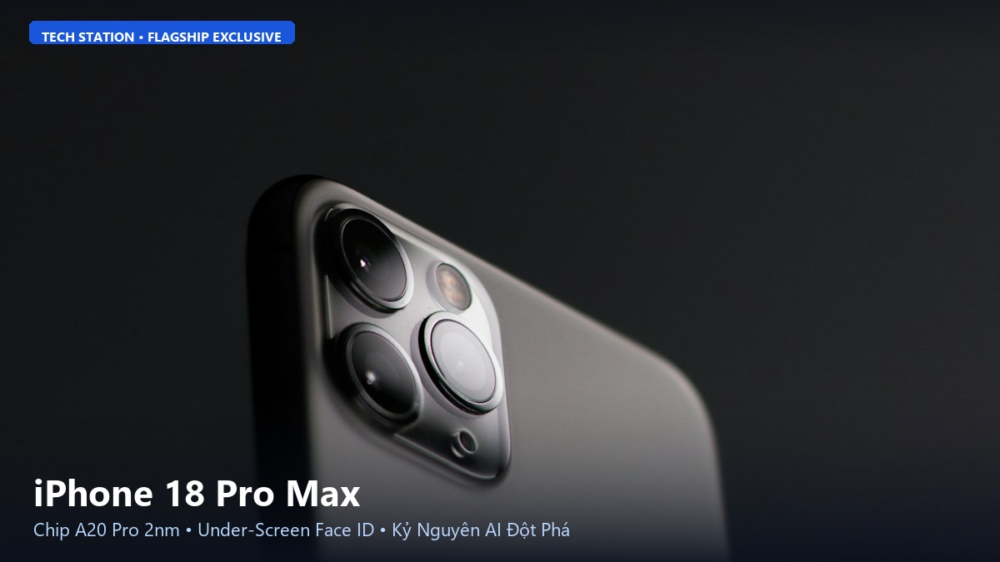
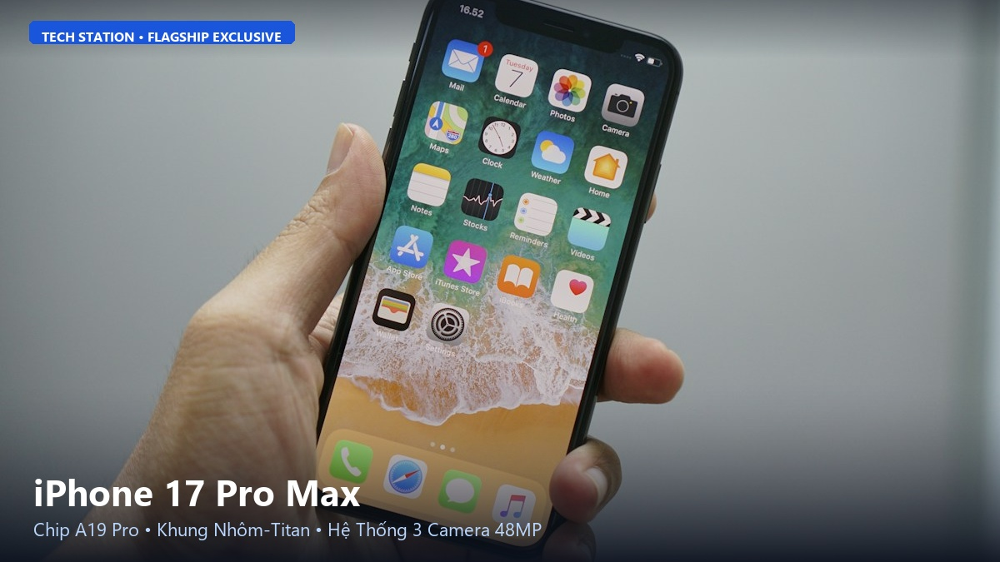
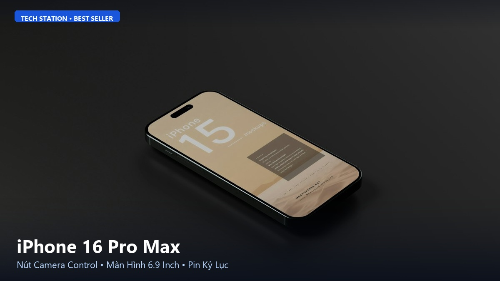
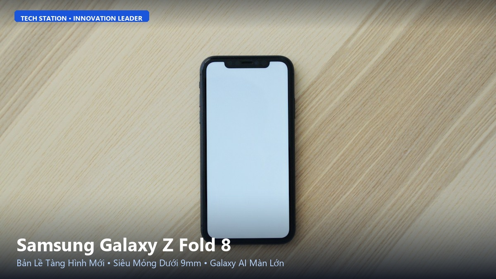
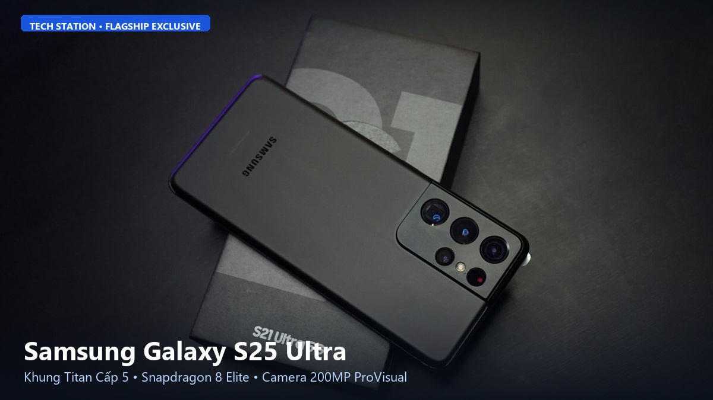
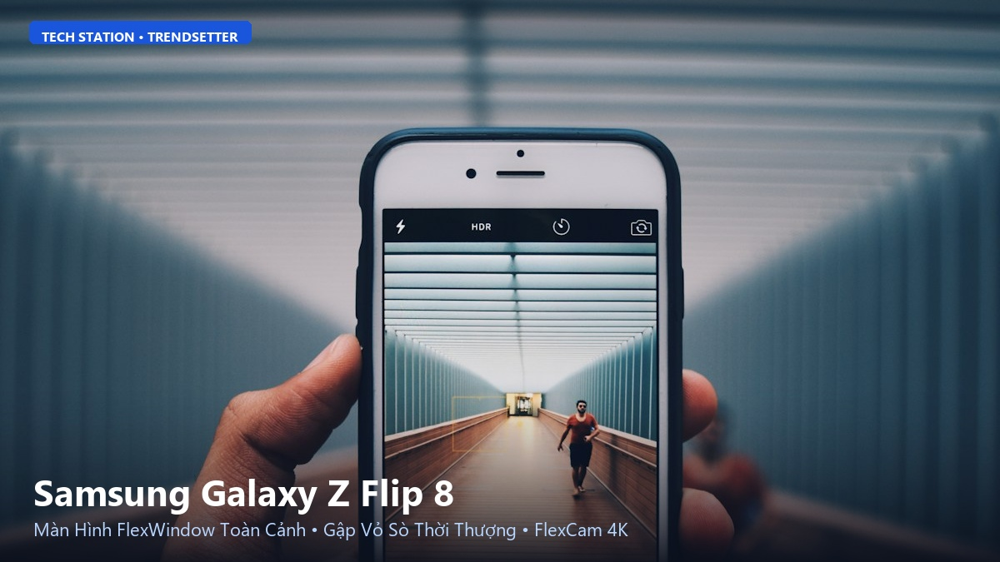
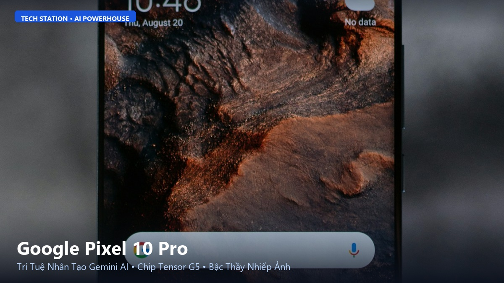
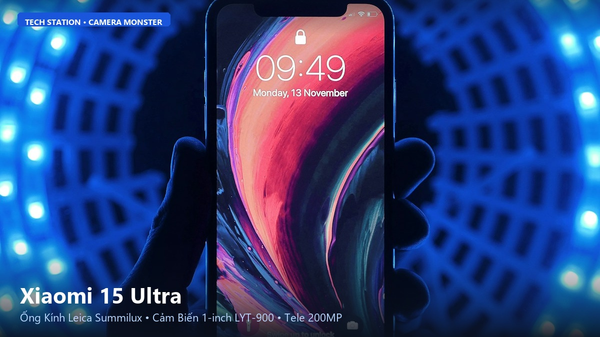
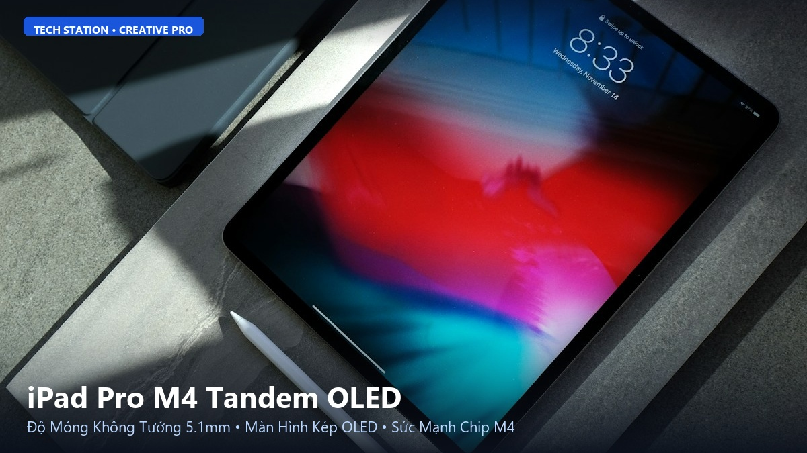
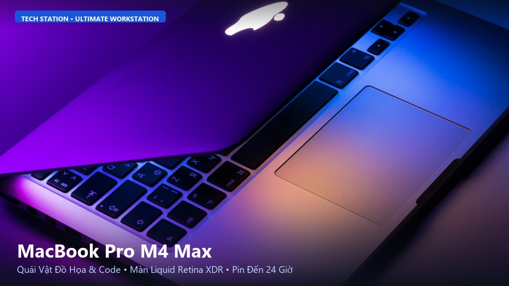

Đánh Giá iPhone 18 Pro Max: Kỷ Nguyên AI Toàn Năng & Chuẩn Mực Smartphone Tương Lai
Tech Station Review • Đánh giá Flagship Apple • Cập nhật: 2026

Hình 1: iPhone 18 Pro Max với thiết kế màn hình tràn viền và công nghệ Face ID ẩn dưới màn hình tại Tech Station.
Chào mừng bạn đến với Tech Station. Nếu bạn đang tìm kiếm đỉnh cao công nghệ di động và muốn biết chiếc flagship tối thượng của Apple có gì đột phá, bài viết này sẽ phân tích toàn diện iPhone 18 Pro Max – tuyệt tác định hình lại thị trường smartphone cao cấp trong năm nay. Tại Tech Station, chúng tôi luôn cập nhật những thông tin công nghệ sớm nhất và chính xác nhất để giúp bạn đưa ra lựa chọn đầu tư xứng đáng.
1. Giới thiệu chung và Định vị sản phẩm:
iPhone 18 Pro Max là biểu tượng tối thượng của dòng smartphone cao cấp mang thương hiệu Apple. Thiết bị này không chỉ đơn thuần là bản nâng cấp cấu hình thường niên, mà đánh dấu bước chuyển mình mang tính lịch sử sang kỷ nguyên phần cứng tối ưu hóa hoàn toàn cho trí tuệ nhân tạo (Apple Intelligence 2.0).
Với việc hướng tới nhóm khách hàng cao cấp, doanh nhân, nhà sáng tạo nội dung chuyên nghiệp và các tín đồ công nghệ đòi hỏi trải nghiệm hoàn mỹ nhất, iPhone 18 Pro Max xác lập một tiêu chuẩn mới về sức mạnh xử lý lẫn sự tinh tế trong thẩm mỹ.
2. Thiết kế nguyên khối Titan thế hệ mới & Màn hình không viền:
Apple tiếp tục hoàn thiện ngôn ngữ thiết kế với khung hợp kim Titan thế hệ thứ 3 (Grade 5 Titanium Plus), được gia công bằng công nghệ cắt laser chính xác giúp máy nhẹ hơn 12% nhưng khả năng chịu lực va đập tăng thêm 25% so với thế hệ trước.
Đặc biệt, viền màn hình trên iPhone 18 Pro Max gần như đã biến mất hoàn toàn nhờ công nghệ nén mạch hiển thị siêu mỏng dưới 1mm. Mặt lưng sử dụng kính mờ Ceramic Shield Pro chống bám dấu vân tay tuyệt đối và mang lại cảm giác cầm nắm vô cùng sang trọng, đầm tay.
3. Màn hình ProMotion Tandem OLED & Face ID ẩn dưới màn hình:
Lần đầu tiên trên dòng iPhone, Apple đã đưa toàn bộ cụm cảm biến Face ID xuống bên dưới tấm nền hiển thị. Phần khuyết Dynamic Island giờ đây được tinh gọn thành một chấm camera trước siêu nhỏ và có thể ẩn đi linh hoạt khi xem video toàn màn hình.
Tấm nền Tandem OLED kép thế hệ mới cho độ sáng đỉnh điểm lên tới 3.200 nits ngoài trời nắng gắt, hỗ trợ tần số quét thích ứng ProMotion từ 1Hz đến 144Hz. Mọi thao tác cuộn vuốt, chơi game hay xem nội dung HDR Dolby Vision đều sống động và sắc nét đến từng chi tiết nhỏ nhất.
4. Sức mạnh vượt giới hạn với vi xử lý Apple A20 Pro 2nm:
Trái tim của iPhone 18 Pro Max là con chip Apple A20 Pro được chế tạo trên tiến trình 2nm tiên tiến nhất thế giới của TSMC. Kiến trúc 6 nhân CPU và 6 nhân GPU thế hệ mới mang lại hiệu suất xử lý đồ họa tăng 35% nhưng tiết kiệm điện năng hơn 25%.
Đặc biệt, bộ xử lý thần kinh 16 nhân Neural Engine đạt năng lực tính toán 45 TOPS, cho phép xử lý cục bộ các mô hình ngôn ngữ lớn (LLM) và các tính năng Apple Intelligence 2.0 trực tiếp trên máy mà không cần gửi dữ liệu lên máy chủ đám mây, bảo đảm quyền riêng tư tuyệt đối.
5. Đột phá cụm camera tiềm vọng 200MP & Khả năng quay không gian:
Hệ thống camera sau của iPhone 18 Pro Max được nâng cấp toàn diện với cảm biến chính Fusion 200MP khẩu độ biến thiên f/1.4 - f/2.8, cho khả năng thu sáng vượt trội trong điều kiện đêm tối.
Ống kính tele tiềm vọng Tetraprism thế hệ mới cho phép zoom quang học liên tục từ 5x đến 10x và zoom kỹ thuật số lên đến 100x với sự hỗ trợ của thuật toán AI siêu phân giải. Máy hỗ trợ quay video không gian (Spatial Video) chuẩn 8K 60fps tương thích hoàn hảo với kính thực tế ảo Apple Vision Pro.
6. Thời lượng pin 2 ngày và công nghệ sạc nhanh MagSafe 2.0:
Nhờ vào viên pin dung lượng lớn 5.000 mAh kết hợp cấu trúc tản nhiệt buồng hơi graphene và tiến trình chip 2nm tiết kiệm điện, iPhone 18 Pro Max tự tin mang lại thời gian sử dụng liên tục lên đến 33 giờ phát video trực tuyến.
Công nghệ sạc nhanh có dây 45W cho phép nạp 50% pin chỉ trong vòng 20 phút. Hệ thống sạc không dây MagSafe 2.0 công suất 25W mới đi kèm khả năng cố định nam châm siêu chắc chắn và giảm thiểu tối đa hiện tượng nóng máy khi sạc.
7. Trí tuệ nhân tạo Apple Intelligence 2.0 cá nhân hóa:
Với Apple Intelligence 2.0, trợ lý Siri đã thực sự trở thành người cộng sự thông minh biết thấu hiểu ngữ cảnh cá nhân của bạn. Siri có thể tìm kiếm chính xác từng bức ảnh, tóm tắt email dài hay tự động lên lịch trình công việc phức tạp dựa trên thói quen hàng ngày.
Các công cụ sáng tạo nội dung như Genmoji, Image Playground và công cụ dọn dẹp vật thể thừa trong ảnh Clean Up được nâng cấp vượt bậc, mang lại trải nghiệm tiện ích chưa từng có.
8. Bảng thông số kỹ thuật tiêu chuẩn của iPhone 18 Pro Max:
| Thông số | Chi tiết |
|---|
| Màn hình | 6.9 inch Super Retina XDR Tandem OLED, 1-144Hz, 3200 nits |
| Vi xử lý (CPU) | Apple A20 Pro (Tiến trình 2nm tiên tiến nhất) |
| Bộ nhớ RAM | 12GB LPDDR5X tối ưu hóa AI cục bộ |
| Bộ nhớ trong (ROM) | 256GB / 512GB / 1TB / 2TB NVMe |
| Camera sau | Chính 200MP + Góc siêu rộng 48MP + Tele tiềm vọng 48MP (Zoom quang 10x) |
| Camera trước | 24MP TrueDepth ẩn dưới màn hình với Autofocus |
| Dung lượng pin & Sạc | 5.000 mAh, Sạc nhanh có dây 45W, MagSafe 25W |
| Kháng nước & Bụi | Chuẩn IP68 (chịu độ sâu 6m trong 30 phút) |
| Hệ điều hành | iOS 20 với Apple Intelligence 2.0 tích hợp sâu |
9. Giá bán niêm yết và chính sách bảo hành tại Tech Station:
Tại hệ thống Tech Station, iPhone 18 Pro Max chính hãng VN/A được phân phối với mức giá khởi điểm chỉ từ 34.990.000 VNĐ cho phiên bản 256GB, kèm nhiều ưu đãi hấp dẫn như trợ giá thu cũ đổi mới lên đến 3.000.000 VNĐ và trả góp 0% lãi suất.
Tất cả sản phẩm bán ra đều được áp dụng chính sách bảo hành vàng 12 tháng 1 đổi 1 trong vòng 30 ngày nếu có lỗi từ nhà sản xuất, bảo hành rơi vỡ màn hình VIP và dịch vụ giao hàng hỏa tốc trong 2 giờ.
10. Tổng kết: iPhone 18 Pro Max dành cho ai?
iPhone 18 Pro Max là đỉnh cao hội tụ của thiết kế không viền tương lai, sức mạnh chip 2nm vô song và hệ thống camera tele 10x hàng đầu. Đây là sự lựa chọn không thể tuyệt vời hơn dành cho những ai tìm kiếm thiết bị công nghệ hoàn hảo nhất hành tinh.
Hãy liên hệ ngay với Tech Station để nhận tư vấn chi tiết và đặt hàng trước với những phần quà độc quyền chỉ có tại Tech Station!
❖ [ HẾT BÀI VIẾT 01/10: IPHONE 18 PRO MAX ] ❖
Tech Station Editorial Team • Chuyên mục: Đánh giá Flagship Apple
Bản quyền nội dung thuộc về Tech Station © 2026. Mọi hành vi sao chép vui lòng ghi rõ nguồn TechStation.vn
Trải Nghiệm iPhone 17 Pro Max: Sức Mạnh Vi Xử Lý A19 Pro & Cụm Camera 48MP Toàn Dải
Tech Station Review • Đánh giá Flagship Apple • Cập nhật: 2026

Hình 1: Cận cảnh thiết kế sang trọng và khung hợp kim nhôm-titan trên iPhone 17 Pro Max tại Tech Station.
Chào mừng bạn đến với Tech Station. Đón đầu làn sóng công nghệ với iPhone 17 Pro Max, Apple đã chứng minh vị thế dẫn đầu khi kết hợp vật liệu hợp kim siêu nhẹ cùng cấu trúc tản nhiệt buồng hơi tiên tiến, mang lại sức mạnh bền bỉ chưa từng có. Hãy cùng Tech Station đi sâu vào chi tiết những cải tiến đáng giá nhất trên mẫu máy này.
1. Giới thiệu chung:
iPhone 17 Pro Max là phiên bản flagship được tối ưu hóa toàn diện dựa trên những phản hồi thực tế của người dùng. Không chỉ cải thiện độ bền và cảm giác cầm nắm, thiết bị còn tập trung giải quyết triệt để vấn đề tản nhiệt khi xử lý đồ họa nặng.
Sản phẩm được định vị dành cho những người dùng yêu thích sự ổn định tối đa, các game thủ chuyên nghiệp và những ai muốn một cỗ máy đa nhiệm không bao giờ bị tụt xung nhịp.
2. Khung nhôm-titan nguyên khối và màu sắc Titan mới:
Trên iPhone 17 Pro Max, Apple đã kết hợp sáng tạo giữa khung sườn nhôm hàng không nguyên khối tản nhiệt nhanh với lớp phủ Titan PVD cao cấp bên ngoài, tạo nên một kết cấu vừa chống xước tuyệt hảo vừa nhẹ nhàng bất ngờ.
Bảng màu năm nay bổ sung tùy chọn Titan Sa Mạc Đậm và Titan Băng Tuyết vô cùng thanh lịch, tôn vinh nét đẳng cấp của người sở hữu.
3. Màn hình Super Retina XDR 6.9 inch sáng 3000 nits:
Màn hình của máy đạt kích thước 6.9 inch rộng rãi, trang bị tấm nền OLED thế hệ mới tiết kiệm điện năng hơn 15%. Độ sáng cực đại ngoài trời đạt mức 3.000 nits giúp bạn dễ dàng đọc tài liệu hay xem bản đồ ngay dưới ánh nắng trưa gay gắt.
Kính cường lực Ceramic Shield 2 mang lại khả năng chống trầy xước gấp 3 lần kính cường lực thông thường, giúp bảo vệ an toàn cho màn hình trong mọi tình huống sơ ý rơi rớt.
4. Chipset Apple A19 Pro & Tản nhiệt buồng hơi Vapor Chamber:
Bước ngoặt lớn nhất trên iPhone 17 Pro Max chính là sự xuất hiện của hệ thống tản nhiệt buồng hơi (Vapor Chamber) kết hợp tấm graphite nguyên chất. Nhờ đó, chip A19 Pro có thể duy trì xung nhịp đỉnh cao trong suốt nhiều giờ chơi game 3D nặng mà máy vẫn luôn mát mẻ.
Bộ nhớ RAM được nâng cấp lên 12GB giúp việc chạy song song nhiều ứng dụng nặng và xử lý tác vụ trí tuệ nhân tạo trở nên mượt mà, không gặp hiện tượng tải lại trang.
5. Hệ thống 3 camera 48MP đồng bộ & Zoom quang học Tetraprism:
Lần đầu tiên trên iPhone, cả ba ống kính: góc rộng (Wide), góc siêu rộng (Ultra Wide) và telephoto đều đạt độ phân giải đồng bộ 48MP. Điều này mang lại sự đồng nhất hoàn hảo về màu sắc và chi tiết khi bạn chuyển đổi giữa các tiêu cự chụp ảnh.
Ống kính telephoto hỗ trợ zoom quang học 5x sắc nét và zoom lai chất lượng cao 10x, giúp bạn dễ dàng bắt trọn những khoảnh khắc biểu diễn trên sân khấu hay phong cảnh ở cự ly xa.
6. Thời lượng pin ấn tượng và tốc độ sạc nhanh 45W:
Sở hữu viên pin dung lượng 4.850 mAh kết hợp quản lý năng lượng thông minh từ chip A19 Pro, iPhone 17 Pro Max mang lại thời gian lướt web và xem video liên tục lên đến 30 tiếng.
Chuẩn sạc nhanh 45W mới qua cổng USB-C 3.2 cho phép sạc từ 0% lên 60% chỉ trong vòng 25 phút, giúp bạn tiết kiệm đáng kể thời gian chờ đợi trong những chuyến công tác bận rộn.
7. Trải nghiệm hệ điều hành iOS 19 và Apple Intelligence:
Máy được cài đặt sẵn iOS 19 với giao diện người dùng trực quan, khả năng tùy biến màn hình khóa sâu hơn và hệ thống widget tương tác thế hệ mới.
Bộ công cụ Apple Intelligence hỗ trợ soạn thảo văn bản tự động, dịch thuật thời gian thực và tự động tạo phụ đề cho các cuộc gọi thoại với độ chính xác rất cao.
8. Bảng thông số kỹ thuật tiêu chuẩn của iPhone 17 Pro Max:
| Thông số | Chi tiết |
|---|
| Màn hình | 6.9 inch Super Retina XDR OLED, 120Hz ProMotion, 3000 nits |
| Vi xử lý (CPU) | Apple A19 Pro (Tiến trình 3nm N3P với buồng hơi tản nhiệt) |
| Bộ nhớ RAM | 12GB LPDDR5X |
| Bộ nhớ trong (ROM) | 256GB / 512GB / 1TB NVMe |
| Camera sau | Chính 48MP OIS + Siêu rộng 48MP + Tele tiềm vọng 48MP (Zoom quang 5x) |
| Camera trước | 18MP TrueDepth với Autofocus |
| Dung lượng pin & Sạc | 4.850 mAh, Sạc nhanh 45W, MagSafe 25W |
| Trọng lượng | 221g siêu nhẹ |
| Hệ điều hành | iOS 19 với Apple Intelligence |
9. Giá bán và chính sách ưu đãi tại Tech Station:
Hiện nay iPhone 17 Pro Max đang được Tech Station phân phối với mức giá cực kỳ cạnh tranh, đi kèm gói bảo hành rơi vỡ 1 năm và voucher giảm giá 10% khi mua kèm phụ kiện chính hãng như ốp lưng, tai nghe AirPods Pro.
Khách hàng có thể trải nghiệm trực tiếp máy tại các showroom của Tech Station hoặc đặt mua online với chính sách kiểm tra hàng trước khi thanh toán.
10. Lời khuyên nâng cấp từ chuyên gia Tech Station:
Nếu bạn đang sử dụng các thế hệ như iPhone 13 Pro Max hay 14 Pro Max, việc nâng cấp lên iPhone 17 Pro Max sẽ mang lại sự khác biệt vượt trội về độ sáng màn hình, trọng lượng nhẹ hơn rõ rệt và khả năng chụp ảnh tele 5x sắc nét.
Đến ngay Tech Station để nhận ưu đãi lên đời sản phẩm với mức trợ giá tốt nhất thị trường!
❖ [ HẾT BÀI VIẾT 02/10: IPHONE 17 PRO MAX ] ❖
Tech Station Editorial Team • Chuyên mục: Đánh giá Flagship Apple
Bản quyền nội dung thuộc về Tech Station © 2026. Mọi hành vi sao chép vui lòng ghi rõ nguồn TechStation.vn
Đánh Giá Chi Tiết iPhone 16 Pro Max: Nút Bấm Camera Control Độc Đáo & Pin Kỷ Lục
Tech Station Review • Đánh giá Flagship Apple • Cập nhật: 2026

Hình 1: iPhone 16 Pro Max với nút Camera Control điện dung và cụm 3 camera Titan đẳng cấp tại Tech Station.
Chào mừng bạn đến với Tech Station. iPhone 16 Pro Max hiện đang là một trong những mẫu smartphone bán chạy nhất tại hệ thống Tech Station nhờ sở hữu viền màn hình mỏng nhất từng thấy trên một chiếc điện thoại, cùng nút điều khiển Camera Control mang lại trải nghiệm chụp ảnh như máy cơ thực thụ. Cùng Tech Station điểm qua những điểm sáng giá nhất của siêu phẩm này.
1. Giới thiệu chung:
iPhone 16 Pro Max là chiếc smartphone định hình tiêu chuẩn màn hình lớn và công thái học của Apple. Với thiết kế viền mỏng kỷ lục, thiết bị mở rộng không gian hiển thị lên đến 6.9 inch mà kích thước tổng thể hầu như không tăng đáng kể.
Sản phẩm nhận được sự đón nhận nồng nhiệt từ người tiêu dùng toàn cầu nhờ độ hoàn thiện tinh xảo, hiệu năng mạnh mẽ và thời lượng pin dẫn đầu phân khúc flagship.
2. Ngôn ngữ thiết kế viền siêu mỏng và khung Titan cấp 5:
Sử dụng công nghệ cấu trúc giảm viền BRS (Border Reduction Structure), iPhone 16 Pro Max sở hữu viền đen quanh màn hình chỉ mỏng 1.15mm, tạo cảm giác hình ảnh như tràn ra sát mép tay người cầm.
Khung viền bằng Titan Cấp 5 được xử lý nhám mịn chống bám bẩn, kết hợp 4 tùy chọn màu sắc thời thượng: Titan Sa Mạc, Titan Tự Nhiên, Titan Trắng và Titan Đen.
3. Nút bấm Camera Control điện dung – Đột phá thao tác nhiếp ảnh:
Điểm nhấn độc đáo nhất trên cạnh phải của iPhone 16 Pro Max là nút Camera Control phủ kính sapphire. Nút bấm này tích hợp cả cảm biến lực và cảm ứng điện dung, cho phép bạn trượt ngón tay để zoom, chuyển chế độ chụp, điều chỉnh khẩu độ hoặc bấm nhẹ để khóa nét như một chiếc máy ảnh mirrorless thực thụ.
Tính năng này giúp bạn chụp nhanh những khoảnh khắc chớp nhoáng trên đường phố hay trong các chuyến du lịch mà không cần chạm tay lên màn hình.
4. Sức mạnh chip A18 Pro tối ưu sâu cho Apple Intelligence:
Được xây dựng trên tiến trình 3nm thế hệ thứ 2 của TSMC, vi xử lý Apple A18 Pro mang lại tốc độ xử lý nhanh hơn 15% so với thế hệ trước và hỗ trợ Ray Tracing bằng phần cứng nhanh gấp 2 lần, giúp chơi mượt mà các tựa game bom tấn chuẩn console như Assassin's Creed Mirage hay Resident Evil.
Neural Engine 16 nhân được tăng cường băng thông bộ nhớ lên đến 17%, bảo đảm các tác vụ sinh văn bản và tạo ảnh bằng AI phản hồi gần như tức thì.
5. Camera tele tiềm vọng 5x và quay phim 4K 120fps Dolby Vision:
iPhone 16 Pro Max được trang bị ống kính góc siêu rộng nâng cấp lên 48MP và camera tele tiềm vọng 5x tiêu cự 120mm, hỗ trợ chụp ảnh chân dung xóa phông tự nhiên và sắc nét từ xa.
Khả năng quay video 4K 120fps ở định dạng Dolby Vision và ProRes Log mở ra tiềm năng sáng tạo vô hạn cho các nhà làm phim di động, cho phép điều chỉnh tốc độ khung hình linh hoạt ngay trong ứng dụng Photos.
6. Thời lượng pin kỷ lục thách thức mọi nhu cầu sử dụng:
Với dung lượng pin lên tới 4.685 mAh kết hợp bo mạch chủ được thiết kế lại tối ưu không gian, iPhone 16 Pro Max cung cấp thời lượng sử dụng xem video lên đến 33 giờ liên tục – mức pin tốt nhất trong lịch sử các dòng iPhone từ trước đến nay.
Người dùng có thể thoải mái sử dụng với cường độ cao từ sáng sớm đến tận đêm muộn mà không cần phải mang theo pin sạc dự phòng.
7. Hệ thống 4 micro chất lượng phòng thu và tính năng Audio Mix:
Apple trang bị cho iPhone 16 Pro Max cụm 4 micro chất lượng studio giúp giảm thiểu tiếng ồn gió khi quay ngoài trời. Tính năng Audio Mix sử dụng thuật toán máy học thông minh để tách giọng nói của chủ thể ra khỏi âm thanh môi trường xung quanh một cách kỳ diệu.
8. Bảng thông số kỹ thuật tiêu chuẩn của iPhone 16 Pro Max:
| Thông số | Chi tiết |
|---|
| Màn hình | 6.9 inch Super Retina XDR OLED, 120Hz ProMotion, 2000 nits |
| Vi xử lý (CPU) | Apple A18 Pro (Tiến trình 3nm N3E thế hệ thứ hai) |
| Bộ nhớ RAM | 8GB LPDDR5X |
| Bộ nhớ trong (ROM) | 256GB / 512GB / 1TB NVMe |
| Camera sau | Chính 48MP Fusion + Siêu rộng 48MP + Tele 12MP (Zoom quang 5x) |
| Camera trước | 12MP TrueDepth với Autofocus |
| Dung lượng pin & Sạc | 4.685 mAh, Sạc nhanh có dây 30W, MagSafe 25W |
| Nút bấm chức năng | Action Button & Camera Control điện dung |
| Hệ điều hành | iOS 18 (Hỗ trợ Apple Intelligence) |
9. Báo giá và dịch vụ hậu mãi chu đáo tại Tech Station:
Sản phẩm iPhone 16 Pro Max hiện có sẵn tại kho hàng Tech Station với đầy đủ các phiên bản dung lượng và màu sắc. Mức giá tại Tech Station luôn được niêm yết công khai và đảm bảo cạnh tranh nhất trên thị trường.
Tech Station cam kết máy mới 100% nguyên seal chưa active, bảo hành 12 tháng chính hãng Apple và miễn phí vận chuyển tận nhà trên toàn quốc.
10. Tổng kết: Chiếc iPhone hoàn hảo nhất cho người thực tế:
Nếu bạn đang tìm kiếm một thiết bị đã được khẳng định về độ bền, sở hữu màn hình khổng lồ, thời lượng pin trâu nhất và nút bấm chụp ảnh tiện dụng, iPhone 16 Pro Max chính là sự đầu tư an tâm và xứng đáng nhất.
Trên Tay Samsung Galaxy Z Fold 8: Tuyệt Tác Màn Hình Gập Siêu Mỏng, Nếp Gấp Tàng Hình
Tech Station Review • Đánh giá Smartphone Màn Hình Gập • Cập nhật: 2026

Hình 1: Samsung Galaxy Z Fold 8 với thiết kế siêu mỏng và nếp gấp màn hình tàng hình tại Tech Station.
Chào mừng bạn đến với Tech Station. Dòng smartphone màn hình gập của Samsung đã đạt tới độ chín muồi hoàn mỹ với Galaxy Z Fold 8. Thiết kế siêu mỏng nhẹ xóa nhòa ranh giới giữa điện thoại gập và điện thoại thanh truyền thống. Cùng Tech Station khám phá ngay những điều kỳ diệu mà cỗ máy đa nhiệm đỉnh cao này mang lại cho công việc và giải trí của bạn.
1. Giới thiệu chung:
Samsung Galaxy Z Fold 8 là minh chứng rõ nét nhất cho năng lực sáng tạo không ngừng của gã khổng lồ công nghệ Hàn Quốc. Sau nhiều thế hệ lắng nghe người dùng, Samsung đã mang đến một thiết bị màn hình gập với độ mỏng đáng kinh ngạc và bản lề hoàn toàn mới.
Sản phẩm là trợ thủ đắc lực không thể thiếu của các doanh nhân, nhà quản lý, nhà giao dịch tài chính và những người cần xử lý khối lượng công việc lớn trên thiết bị di động.
2. Đột phá bản lề FlexHinge thế hệ mới – Nếp gấp tàng hình:
Bản lề kép FlexHinge trên Galaxy Z Fold 8 được chế tác từ hợp kim titan siêu nhẹ kết hợp cơ chế giọt nước sâu hơn, giúp hai nửa màn hình áp sát khít hoàn toàn khi gập lại mà không để lộ khe hở.
Quan trọng nhất, nếp gấp ở giữa màn hình đã được xử lý triệt để, gần như biến mất khi nhìn thẳng và tạo cảm giác vuốt chạm trơn tru liền mạch từ mép này sang mép kia.
3. Kích thước siêu mỏng dưới 9mm và trọng lượng nhẹ tương đương smartphone thanh:
Khi gập lại, Galaxy Z Fold 8 chỉ dày 8.9mm và trọng lượng giảm xuống chỉ còn 219g – con số thậm chí còn nhẹ hơn nhiều mẫu smartphone dạng thanh cao cấp hiện nay trên thị trường.
Khung viền Armor Aluminum thế hệ mới chống trầy xước và mặt kính cường lực Corning Gorilla Armor giúp máy vừa nhẹ vừa chống chịu va đập cực tốt.
4. Không gian làm việc màn hình trong 7.6 inch rực rỡ:
Màn hình ngoài của máy có tỷ lệ chuẩn 20:9 kích thước 6.4 inch giúp bạn gõ phím và nhắn tin thoải mái bằng một tay như điện thoại bình thường. Khi mở ra, không gian màn hình trong 7.6 inch Dynamic AMOLED 2X biến máy thành một chiếc tablet mini đích thực.
Màn hình hỗ trợ bút S-Pen Fold Edition siêu nhạy, cho phép ghi chú nhanh, phác thảo ý tưởng và ký hợp đồng điện tử mọi lúc mọi nơi.
5. Hiệu năng Snapdragon 8 Gen 5 for Galaxy tối ưu hóa:
Sức mạnh của Galaxy Z Fold 8 đến từ vi xử lý Snapdragon 8 Gen 5 for Galaxy được Qualcomm ép xung riêng cho Samsung. Với 16GB RAM mặc định, máy có thể mở cùng lúc 3 cửa sổ ứng dụng và kéo thả dữ liệu giữa các cửa sổ mà không hề bị giật lag.
Hệ thống tản nhiệt buồng hơi lớn hơn 40% đảm bảo nhiệt độ luôn ổn định khi render video hoặc tham gia các cuộc họp trực tuyến kéo dài.
6. Bộ công cụ Galaxy AI đa nhiệm thông minh trên màn hình lớn:
Galaxy AI trên Z Fold 8 được tối ưu riêng cho không gian hiển thị rộng lớn. Tính năng Note Assist tự động tóm tắt biên bản cuộc họp, chia cột thông minh; trong khi tính năng Interpreter (Phiên dịch viên) tận dụng cả màn hình trong lẫn màn hình ngoài để hai người đối thoại trực tiếp bằng hai ngôn ngữ khác nhau.
7. Hệ thống camera flagship 200MP & Chế độ FlexCam rảnh tay:
Galaxy Z Fold 8 được trang bị camera chính 200MP ISOCELL thừa hưởng từ dòng Ultra, mang lại độ chi tiết ảnh vượt trội. Bạn có thể gập máy nửa chừng đặt lên bàn để quay vlog, họp Zoom hoặc chụp ảnh góc thấp mà không cần phụ thuộc vào chân đế tripod.
8. Bảng thông số kỹ thuật tiêu chuẩn của Samsung Galaxy Z Fold 8:
| Thông số | Chi tiết |
|---|
| Màn hình chính (trong) | 7.6 inch Dynamic AMOLED 2X, 1-120Hz, 2800 nits, nếp gấp tàng hình |
| Màn hình phụ (ngoài) | 6.4 inch Dynamic AMOLED 2X, 120Hz, tỷ lệ 20:9 |
| Vi xử lý (CPU) | Snapdragon 8 Gen 5 for Galaxy (Tiến trình 3nm) |
| Bộ nhớ RAM | 16GB LPDDR5X |
| Bộ nhớ trong (ROM) | 256GB / 512GB / 1TB UFS 4.1 |
| Camera sau | Chính 200MP OIS + Góc siêu rộng 12MP + Tele 50MP (Zoom 5x) |
| Dung lượng pin & Sạc | 4.600 mAh, Sạc nhanh có dây 45W, Sạc không dây 15W |
| Độ mỏng & Trọng lượng | 8.9mm (khi gập), 4.5mm (khi mở), Trọng lượng 219g |
| Kháng nước & Bụi | Chuẩn IP48 bền bỉ |
9. Mức giá và chính sách bảo hành Samsung Care+ tại Tech Station:
Samsung Galaxy Z Fold 8 được bán tại Tech Station với gói bảo hành đặc quyền toàn diện: Miễn phí gói bảo hiểm rơi vỡ màn hình Samsung Care+ 1 năm, hỗ trợ trả góp 0% lãi suất và tặng kèm bao da cao cấp kèm bút S-Pen chính hãng.
Đội ngũ kỹ thuật viên chuyên nghiệp tại Tech Station luôn sẵn sàng hỗ trợ khách hàng chuyển dữ liệu và cài đặt phần mềm hoàn toàn miễn phí.
10. Kết luận: Công cụ tối thượng cho phong cách làm việc hiện đại:
Galaxy Z Fold 8 là chiếc điện thoại gập hoàn thiện nhất lịch sử, kết hợp hoàn hảo giữa độ mỏng nhẹ thời trang và năng lực làm việc vô tận. Hãy sở hữu ngay Galaxy Z Fold 8 tại Tech Station để nâng tầm đẳng cấp của bạn!
❖ [ HẾT BÀI VIẾT 04/10: SAMSUNG GALAXY Z FOLD 8 ] ❖
Tech Station Editorial Team • Chuyên mục: Đánh giá Smartphone Màn Hình Gập
Bản quyền nội dung thuộc về Tech Station © 2026. Mọi hành vi sao chép vui lòng ghi rõ nguồn TechStation.vn
Đánh Giá Samsung Galaxy S25 Ultra: Bá Chủ Thế Giới Android Cùng Chip Snapdragon 8 Elite
Tech Station Review • Đánh giá Flagship Samsung • Cập nhật: 2026

Hình 1: Samsung Galaxy S25 Ultra với khung Titan vát phẳng và bút S-Pen quyền năng tại Tech Station.
Chào mừng bạn đến với Tech Station. Nếu bạn cần một cỗ máy mạnh mẽ, chụp ảnh siêu zoom hàng đầu và ghi chú tiện lợi với bút S-Pen, Samsung Galaxy S25 Ultra chính là sự lựa chọn không đối thủ trong phân khúc điện thoại dạng thanh cao cấp. Hãy cùng Tech Station phân tích chi tiết xem vì sao đây được mệnh danh là 'vua của thế giới Android'.
1. Giới thiệu chung:
Samsung Galaxy S25 Ultra là lá cờ đầu của thương hiệu Samsung trong phân khúc smartphone cao cấp truyền thống. Kế thừa sự thành công vang dội của các thế hệ tiền nhiệm, S25 Ultra tinh chỉnh các góc bo cong nhẹ nhàng hơn, đem lại cảm giác cầm êm ái mà không bị cấn tay như trước.
Đây là thiết bị chuẩn mực phục vụ tối đa cho các công việc chuyên sâu, chụp ảnh phong cảnh du lịch và giải trí đồ họa đỉnh cao.
2. Khung Titan Cấp 5 vát phẳng và kính chống chói Gorilla Armor thế hệ mới:
Thân máy được chế tác từ Titanium Grade 5 siêu bền kết hợp mặt kính Corning Gorilla Armor thế hệ thứ 2, giúp triệt tiêu tới 80% hiện tượng phản xạ ánh sáng trên màn hình.
Nhờ lớp phủ chống chói đặc biệt này, bạn có thể dễ dàng nhìn rõ nội dung hiển thị ngay dưới đèn neon văn phòng hay ánh nắng gay gắt mà không bị mỏi mắt.
3. Màn hình Dynamic AMOLED 2X 6.8 inch phẳng hoàn toàn:
Màn hình của S25 Ultra được làm phẳng hoàn toàn, giúp việc dán kính cường lực bảo vệ trở nên dễ dàng và thao tác vẽ bằng bút S-Pen sát viền không còn bị trượt ngón tay.
Độ phân giải Quad HD+ cùng tần số quét thích ứng 1-120Hz mang lại màu sắc sống động, độ tương phản tuyệt đối và độ mượt mà đáng kinh ngạc trong từng khung hình.
4. Sức mạnh hủy diệt từ Snapdragon 8 Elite & NPU thế hệ mới:
Trang bị vi xử lý Qualcomm Snapdragon 8 Elite với kiến trúc nhân Oryon thế hệ mới, Galaxy S25 Ultra phá vỡ mọi kỷ lục điểm số hiệu năng trên nền tảng di động. Khả năng xử lý đồ họa tăng hơn 40%, hỗ trợ dò tia Ray Tracing mượt mà ở độ phân giải cao.
Dung lượng RAM tối đa 16GB bảo đảm việc chuyển đổi giữa các ứng dụng nặng diễn ra mượt mà trong chớp mắt.
5. Camera 200MP ProVisual Engine và khả năng Zoom 100x huyền thoại:
Cụm camera của S25 Ultra được nâng cấp thuật toán ProVisual Engine hỗ trợ AI thế hệ mới, nhận diện chủ thể và bối cảnh chính xác để tối ưu tông màu da và chi tiết tóc.
Camera tele tiềm vọng 50MP zoom quang 5x kết hợp ống kính tele 10MP zoom 3x và thuật toán AI Super Resolution cho phép chụp ảnh zoom 100x sắc nét, bắt trọn từng chi tiết của mặt trăng hoặc những đối tượng ở khoảng cách cực xa.
6. Bút S-Pen quyền năng và công nghệ Galaxy AI 2.0:
Bút S-Pen tích hợp sẵn trong thân máy cho phép bạn ghi chú nhanh trên màn hình tắt, chụp ảnh từ xa qua cử chỉ không chạm (Air Actions) và chuyển chữ viết tay thành văn bản số.
Tính năng Khoanh tròn để tìm kiếm (Circle to Search) được nâng cấp thêm khả năng giải toán phức tạp và nhận diện âm thanh bài hát tức thì chỉ trong 1 giây.
7. Thời lượng pin bền bỉ cả ngày và sạc nhanh 45W:
Viên pin 5.000 mAh kết hợp quản lý năng lượng thông minh từ One UI 7 và chip Snapdragon 8 Elite mang lại thời lượng sử dụng lên đến gần 2 ngày đối với các tác vụ cơ bản.
Sạc nhanh 45W giúp sạc đầy từ 0% lên 100% chỉ trong khoảng 55 phút, đáp ứng kịp thời lịch trình di chuyển dày đặc của bạn.
8. Bảng thông số kỹ thuật tiêu chuẩn của Samsung Galaxy S25 Ultra:
| Thông số | Chi tiết |
|---|
| Màn hình | 6.8 inch Dynamic AMOLED 2X QHD+, 1-120Hz, 2600 nits, kính chống phản chiếu |
| Vi xử lý (CPU) | Qualcomm Snapdragon 8 Elite for Galaxy (Tiến trình 3nm) |
| Bộ nhớ RAM | 12GB / 16GB LPDDR5X |
| Bộ nhớ trong (ROM) | 256GB / 512GB / 1TB UFS 4.0 |
| Camera sau | Chính 200MP OIS + Siêu rộng 50MP + Tele 50MP (5x) + Tele 10MP (3x) |
| Camera trước | 12MP Dual Pixel PDAF |
| Dung lượng pin & Sạc | 5.000 mAh, Sạc nhanh có dây 45W, Sạc không dây 15W |
| Bút cảm ứng | S-Pen tích hợp Bluetooth và cử chỉ không chạm |
| Hệ điều hành | One UI 7 trên nền tảng Android 15 (Cam kết cập nhật 7 năm) |
9. Bảng giá và chính sách bảo hành VIP tại Tech Station:
Galaxy S25 Ultra được phân phối chính hãng tại Tech Station với giá ưu đãi, hỗ trợ thu cũ đổi mới trợ giá lên đến 4.000.000 VNĐ và tặng kèm củ sạc nhanh Samsung 45W chính hãng.
Chính sách bảo hành vàng 12 tháng, đổi mới trong 30 ngày đầu tiên nếu phát sinh lỗi phần cứng từ nhà sản xuất.
10. Tổng kết: Sự lựa chọn số 1 cho người dùng Android cao cấp:
Samsung Galaxy S25 Ultra là hiện thân của sự bền bỉ, sức mạnh xử lý vượt trội và khả năng nhiếp ảnh vô song. Liên hệ ngay với Tech Station để nhận báo giá ưu đãi và quà tặng giá trị ngay hôm nay!
Khám Phá Samsung Galaxy Z Flip 8: Phong Cách Thời Thượng & Màn Hình FlexWindow Toàn Cảnh
Tech Station Review • Đánh giá Smartphone Gập Vỏ Sò • Cập nhật: 2026

Hình 1: Samsung Galaxy Z Flip 8 với thiết kế gập vỏ sò nhỏ gọn và màn hình ngoài FlexWindow tại Tech Station.
Chào mừng bạn đến với Tech Station. Không chỉ đơn thuần là một chiếc điện thoại thông minh, Samsung Galaxy Z Flip 8 là một món phụ kiện thời trang cao cấp dành cho những người dùng trẻ trung, năng động và đam mê sáng tạo nội dung mạng xã hội. Cùng Tech Station chiêm ngưỡng vẻ đẹp và công nghệ tiên tiến trên chiếc smartphone gập vỏ sò này.
1. Giới thiệu chung:
Samsung Galaxy Z Flip 8 đại diện cho phong cách sống năng động và cá tính. Với khả năng gập đôi gọn gàng nằm lọt thỏm trong lòng bàn tay hoặc túi áo, chiếc máy mang lại sự tiện lợi tối đa mà không một chiếc điện thoại thanh nào có thể sánh kịp.
Sản phẩm rất được ưa chuộng bởi phái đẹp, các nhà sáng tạo nội dung TikTok, Instagram và những bạn trẻ yêu thích thời trang công nghệ độc đáo.
2. Thiết kế gập vỏ sò nhỏ gọn và bảng màu pastel thời thượng:
Z Flip 8 được gia công với các đường nét bo tròn mềm mại, bản lề gập phẳng khít không khe hở và khung viền nhôm bóng bẩy. Khi gập lại, máy chỉ nhỏ như một hộp phấn trang điểm.
Bộ sưu tập màu sắc năm nay vô cùng đa dạng với các tông màu thanh lịch như Tím Oải Hương, Xanh Bạc Hà, Vàng Nắng và Xám Bạc Titan, dễ dàng phối hợp với mọi phong cách trang phục.
3. Màn hình phụ FlexWindow 4.0 inch tràn viền đa năng:
Màn hình ngoài FlexWindow được nâng kích thước lên đến 4.0 inch bao phủ trọn vẹn nửa trên của mặt lưng. Bạn có thể trả lời tin nhắn bằng bàn phím đầy đủ, xem video YouTube, duyệt bản đồ hay thanh toán Samsung Pay ngay tại màn hình ngoài mà không cần phải mở máy.
Nhiều hình nền tương tác và widget hoạt họa dễ thương giúp bạn thỏa sức cá nhân hóa phong cách riêng của mình.
4. Chế độ FlexCam độc quyền – Sáng tạo góc quay không giới hạn:
Với cơ chế bản lề tự đứng ở nhiều góc độ (từ 75 độ đến 115 độ), bạn có thể đặt máy lên bàn, sàn nhà hoặc bậc thang để tự chụp ảnh nhóm, quay video nhảy hoặc livestream rảnh tay mà không cần nhờ người khác cầm máy.
Tính năng Auto Zoom thông minh tự động nhận diện người trong khung hình để phóng to hoặc thu nhỏ góc quay một cách mượt mà.
5. Camera chụp chân dung sắc nét và công cụ xóa phông AI:
Cụm camera kép phía sau gồm cảm biến chính 50MP OIS và góc siêu rộng 12MP cho phép bạn sử dụng chính camera chính này làm camera selfie chất lượng cao thông qua màn hình phụ.
Các bức ảnh chân dung luôn có độ sáng trong trẻo, làn da mịn màng tự nhiên và hiệu ứng xóa phông chuẩn studio.
6. Cấu hình mạnh mẽ và thời lượng pin được cải thiện:
Được trang bị chip xử lý cao cấp Snapdragon 8 Gen 4 for Galaxy cùng viên pin dung lượng nâng lên 4.200 mAh, Galaxy Z Flip 8 khắc phục hoàn toàn nỗi lo về thời lượng pin của các thế hệ gập trước đây.
Máy đáp ứng thoải mái hơn 1 ngày dài chụp ảnh, lướt mạng xã hội và nghe nhạc liên tục.
7. Chuẩn kháng nước kháng bụi IP48 an tâm sử dụng:
Samsung trang bị chuẩn kháng nước và kháng bụi IP48 cho Galaxy Z Flip 8, giúp máy tự tin chống chọi với những cơn mưa bất chợt hoặc sự cố đổ nước vô tình trong quá trình sinh hoạt hàng ngày.
8. Bảng thông số kỹ thuật tiêu chuẩn của Samsung Galaxy Z Flip 8:
| Thông số | Chi tiết |
|---|
| Màn hình chính (trong) | 6.7 inch Dynamic AMOLED 2X, 120Hz thích ứng, 2600 nits |
| Màn hình phụ (ngoài) | 4.0 inch Super AMOLED FlexWindow, 120Hz |
| Vi xử lý (CPU) | Qualcomm Snapdragon 8 Gen 4 for Galaxy (3nm) |
| Bộ nhớ RAM | 12GB LPDDR5X |
| Bộ nhớ trong (ROM) | 256GB / 512GB UFS 4.0 |
| Camera sau | Chính 50MP Dual Pixel OIS + Góc siêu rộng 12MP |
| Camera trước | 10MP Selfie tích hợp |
| Dung lượng pin & Sạc | 4.200 mAh, Sạc nhanh 35W, Sạc không dây 15W |
| Trọng lượng | 187g siêu gọn nhẹ |
9. Chính sách mua hàng và trợ giá tại Tech Station:
Khi mua Samsung Galaxy Z Flip 8 tại Tech Station, quý khách được tặng kèm ốp lưng chính hãng Flipsuit thông minh, gói dán màn hình miễn phí 2 lần/năm và hỗ trợ trả góp 0% thủ tục nhanh chóng trong 15 phút.
Sản phẩm được bảo hành chính hãng toàn quốc 12 tháng tại các trung tâm ủy quyền Samsung.
10. Kết luận: Chiếc smartphone gập thời thượng nhất:
Samsung Galaxy Z Flip 8 là sự hòa quyện tuyệt vời giữa thiết kế thời trang bắt mắt và công nghệ màn hình gập đỉnh cao. Ghé thăm ngay Tech Station để trên tay và trải nghiệm thực tế siêu phẩm này!
❖ [ HẾT BÀI VIẾT 06/10: SAMSUNG GALAXY Z FLIP 8 ] ❖
Tech Station Editorial Team • Chuyên mục: Đánh giá Smartphone Gập Vỏ Sò
Bản quyền nội dung thuộc về Tech Station © 2026. Mọi hành vi sao chép vui lòng ghi rõ nguồn TechStation.vn
Đánh Giá Google Pixel 10 Pro: Trí Tuệ Nhân Tạo Gemini AI Sâu Rộng & Camera Chân Thực
Tech Station Review • Đánh giá Flagship Google • Cập nhật: 2026

Hình 1: Google Pixel 10 Pro với thanh Camera Visor kim loại và sức mạnh Gemini AI độc quyền tại Tech Station.
Chào mừng bạn đến với Tech Station. Được mệnh danh là 'con cưng' của Google, Pixel 10 Pro mang lại trải nghiệm hệ điều hành Android thuần khiết nhất cùng sức mạnh xử lý ảnh điện toán mà không một đối thủ nào có thể bắt chước. Hãy cùng Tech Station khám phá xem con chip Tensor G5 thế hệ mới và trợ lý ảo Gemini Live trên chiếc máy này có gì đột phá.
1. Giới thiệu chung:
Google Pixel 10 Pro là đại diện tiêu biểu cho tầm nhìn trí tuệ nhân tạo toàn diện của Google trên phần cứng di động. Khác biệt với các hãng điện thoại chạy theo thông số phần cứng thuần túy, Google tập trung tối đa vào trải nghiệm phần mềm thông minh và nhiếp ảnh điện toán.
Sản phẩm là lựa chọn hàng đầu của các lập trình viên, người đam mê hệ điều hành Android gốc mượt mà và những nhiếp ảnh gia đường phố.
2. Thiết kế thanh thoát với dải Camera Visor kim loại độc bản:
Mặt lưng của Pixel 10 Pro nổi bật với thanh camera ngang kim loại nguyên khối (Camera Visor) kéo dài sang hai bên mép máy, tạo sự cân bằng tuyệt đối khi đặt máy trên mặt bàn mà không hề bị bập bênh.
Khung viền máy được hoàn thiện bằng nhôm mờ tái chế thân thiện với môi trường kết hợp mặt lưng kính mờ Gorilla Glass Victus 2 chống bám vân tay hiệu quả.
3. Màn hình Super Actua Display sáng 3000 nits cực sống động:
Trang bị tấm nền Super Actua LTPO OLED kích thước 6.7 inch, màn hình của Pixel 10 Pro hiển thị màu sắc cực kỳ chân thực và chính xác. Tần số quét tự động điều chỉnh linh hoạt từ 1Hz đến 120Hz giúp tiết kiệm pin tối đa.
Độ sáng đỉnh đạt tới 3.000 nits bảo đảm mọi khung hình HDR đều rực rỡ và rõ nét dù xem trực tiếp dưới ánh nắng mặt trời chói chang.
4. Chip xử lý Google Tensor G5 – Kiến trúc NPU chuyên dụng:
Bước đột phá lớn nhất của Pixel 10 Pro là việc trang bị con chip Google Tensor G5 hoàn toàn mới do Google tự thiết kế và gia công trên tiến trình tiên tiến của TSMC. Con chip này giải quyết triệt để vấn đề nhiệt độ và hiệu suất năng lượng của các đời trước.
Bộ xử lý TPU (Tensor Processing Unit) thế hệ mới có thể chạy trực tiếp mô hình ngôn ngữ lớn Gemini Nano trên thiết bị, cho phép phản hồi giọng nói và xử lý hình ảnh nhanh gấp 3 lần.
5. Bậc thầy nhiếp ảnh điện toán: Real Tone, Night Sight & Best Take:
Hệ thống camera gồm cảm biến chính 50MP, camera góc siêu rộng 48MP và camera tele tiềm vọng 48MP zoom quang 5x (Super Res Zoom lên đến 30x). Thuật toán Real Tone tái tạo màu sắc da của mọi chủng tộc một cách chân thật và tôn trọng nhất.
Tính năng Best Take tự động ghép biểu cảm đẹp nhất của mọi người trong bức ảnh nhóm; Magic Audio Eraser loại bỏ tiếng ồn xe cộ trong video chỉ bằng một chạm.
6. Tích hợp sâu trợ lý ảo Google Gemini Live phản hồi tức thì:
Trợ lý AI Gemini Live trên Pixel 10 Pro cho phép bạn trò chuyện bằng giọng nói tự nhiên hai chiều như với một người bạn thật sự. Bạn có thể giơ camera máy quay vào một chiếc xe hỏng và hỏi Gemini cách thay lốp dự phòng, máy sẽ hướng dẫn từng bước trực quan ngay trên màn hình.
7. Cam kết hỗ trợ cập nhật phần mềm và bảo mật liên tục trong 7 năm:
Google cam kết hỗ trợ cập nhật hệ điều hành Android, các tính năng mới qua gói Pixel Feature Drop và bản vá bảo mật liên tục trong suốt 7 năm. Đây là cam kết phần mềm dài hạn và an tâm nhất trong toàn bộ thế giới smartphone.
8. Bảng thông số kỹ thuật tiêu chuẩn của Google Pixel 10 Pro:
| Thông số | Chi tiết |
|---|
| Màn hình | 6.7 inch Super Actua LTPO OLED, 1-120Hz, 3000 nits |
| Vi xử lý (CPU) | Google Tensor G5 (Gia công bởi TSMC, tối ưu hóa AI) |
| Chip bảo mật | Titan M2 chuyên dụng |
| Bộ nhớ RAM | 16GB LPDDR5X |
| Bộ nhớ trong (ROM) | 128GB / 256GB / 512GB / 1TB UFS 4.0 |
| Camera sau | Chính 50MP OIS + Góc siêu rộng 48MP + Tele 48MP (Zoom 5x) |
| Camera trước | 42MP góc rộng với lấy nét tự động |
| Dung lượng pin & Sạc | 5.100 mAh, Sạc nhanh có dây 37W, Sạc không dây 23W |
| Hệ điều hành | Android 15 nguyên bản thuần khiết (Cập nhật 7 năm) |
9. Mức giá phân phối và dịch vụ chăm sóc tại Tech Station:
Google Pixel 10 Pro được Tech Station nhập khẩu và phân phối trực tiếp với chế độ bảo hành 12 tháng phần cứng, hỗ trợ cài đặt đầy đủ kho ứng dụng và tối ưu hóa mạng di động tại Việt Nam.
Tech Station hỗ trợ trả góp qua thẻ tín dụng và giao hàng nhanh trên phạm vi toàn quốc.
10. Tổng kết: Chiếc smartphone lý tưởng cho người yêu thích AI:
Google Pixel 10 Pro là một thiết bị thông minh đích thực mang lại trải nghiệm phần mềm mượt mà, camera xuất sắc và sự hỗ trợ toàn diện từ Google. Hãy ghé ngay Tech Station để sở hữu chiếc Pixel mới nhất!
❖ [ HẾT BÀI VIẾT 07/10: GOOGLE PIXEL 10 PRO ] ❖
Tech Station Editorial Team • Chuyên mục: Đánh giá Flagship Google
Bản quyền nội dung thuộc về Tech Station © 2026. Mọi hành vi sao chép vui lòng ghi rõ nguồn TechStation.vn
Trải Nghiệm Xiaomi 15 Ultra: Cảm Biến 1-Inch Sony LYT-900 & Chất Màu Huyền Thoại Leica
Tech Station Review • Đánh giá Flagship Xiaomi • Cập nhật: 2026

Hình 1: Cụm 4 camera cơ học Leica Summilux đồ sộ trên Xiaomi 15 Ultra tại Tech Station.
Chào mừng bạn đến với Tech Station. Đối với các tín đồ mê nhiếp ảnh đường phố và quay phim điện ảnh di động, Xiaomi 15 Ultra sinh ra để phá vỡ mọi định kiến về chất lượng hình ảnh của một chiếc smartphone. Cùng Tech Station đánh giá chi tiết cỗ máy nhiếp ảnh cơ học kết hợp cùng huyền thoại Leica Đức này.
1. Giới thiệu chung:
Xiaomi 15 Ultra là đỉnh cao công nghệ nhiếp ảnh di động được phát triển thông qua sự hợp tác sâu rộng giữa Xiaomi và thương hiệu máy ảnh huyền thoại Leica đến từ nước Đức.
Máy được chế tạo như một chiếc máy ảnh thực thụ gắn thêm tính năng của một chiếc smartphone, hướng tới các nhiếp ảnh gia chuyên nghiệp, vlogger và những người đam mê ảnh nghệ thuật.
2. Cụm camera tròn cơ học đồ sộ mang phong cách máy ảnh cổ điển:
Điểm thu hút ánh nhìn đầu tiên trên Xiaomi 15 Ultra chính là cụm mô-đun camera tròn khổng lồ ở mặt sau, được bảo vệ bởi kính sapphire chống trầy và viền bezel kim loại phay rãnh sắc sảo.
Mặt lưng máy sử dụng chất liệu da sinh học công nghệ nano kháng bụi bẩn hoặc gốm ceramic cao cấp, mang lại cảm giác đầm chắc và chống trơn trượt tối đa khi cầm máy một tay để chụp ảnh.
3. Màn hình OLED cong 4 cạnh 2K sắc nét rực rỡ:
Máy sở hữu màn hình OLED kích thước 6.73 inch với độ phân giải siêu nét 2K (3200 x 1440 pixels) và độ sáng tối đa 3.000 nits. Thiết kế viền màn hình bo cong vi mô đều 4 cạnh mang lại cảm giác vuốt chạm cực kỳ mượt mà từ mọi hướng.
Công nghệ Dolby Vision và chứng nhận bảo vệ mắt TÜV Rheinland giúp bạn xem ảnh và video nhiều giờ mà không bị căng mắt.
4. Cảm biến chính 1-inch Sony LYT-900 & Ống kính Leica Summilux:
Cảm biến chính của Xiaomi 15 Ultra có kích thước khổng lồ 1 inch mang tên Sony LYT-900, kết hợp khẩu độ biến thiên vô cấp từ f/1.63 đến f/4.0. Khả năng thu sáng tự nhiên vượt trội mang lại hiệu ứng bokeh xóa phông quang học chân thật mà không cần can thiệp phần mềm.
Hai phong cách màu sắc độc quyền: Leica Authentic (chân thực, cổ điển) và Leica Vibrant (tươi tắn, sống động) mang đến chất ảnh nghệ thuật đậm chất điện ảnh.
5. Ống kính tiềm vọng 200MP zoom siêu xa sắc nét từng chi tiết:
Điểm nâng cấp gây sốc nhất là ống kính tele tiềm vọng độ phân giải khủng 200MP với tiêu cự 100mm (zoom quang 4.3x) và zoom kỹ thuật số lên đến 120x. Cảm biến lớn giúp bạn chụp cận cảnh macro telemacro cực kỳ ấn tượng từ khoảng cách 30cm.
Ngoài ra máy còn có thêm một ống kính tele chân dung 50MP 3.2x và camera góc siêu rộng 50MP tạo nên bộ tứ camera toàn dải tiêu cự hoàn hảo.
6. Cấu hình Snapdragon 8 Elite & Viên pin Silicon-Carbon 6000mAh:
Trang bị chip Qualcomm Snapdragon 8 Elite mạnh mẽ cùng công nghệ pin Silicon-Carbon dung lượng khủng 6.000 mAh nhưng thân máy vẫn giữ được độ mỏng hợp lý.
Công nghệ sạc siêu nhanh có dây 90W nạp đầy pin chỉ trong 35 phút, sạc không dây 80W đưa Xiaomi 15 Ultra trở thành chiếc flagship sạc nhanh hàng đầu thế giới.
7. Giao diện Xiaomi HyperOS mượt mà kết nối vạn vật:
Hệ điều hành Xiaomi HyperOS được tối ưu hóa sâu ở tầng nhân hệ thống, cho khả năng kết nối liền mạch với máy tính bảng, đồng hồ thông minh và xe điện Xiaomi SU7 trong hệ sinh thái thông minh của hãng.
8. Bảng thông số kỹ thuật tiêu chuẩn của Xiaomi 15 Ultra:
| Thông số | Chi tiết |
|---|
| Màn hình | 6.73 inch LTPO AMOLED 2K, 1-120Hz, 3000 nits, Dolby Vision |
| Vi xử lý (CPU) | Qualcomm Snapdragon 8 Elite (Tiến trình 3nm) |
| Bộ nhớ RAM | 16GB LPDDR5X |
| Bộ nhớ trong (ROM) | 512GB / 1TB UFS 4.0 |
| Camera sau | Chính 50MP 1-inch LYT-900 + Tele tiềm vọng 200MP + Tele 50MP + Siêu rộng 50MP |
| Camera trước | 32MP góc rộng quay 4K |
| Dung lượng pin & Sạc | 6.000 mAh Silicon-Carbon, Sạc nhanh có dây 90W, Sạc không dây 80W |
| Ống kính quang học | Leica Summilux Vario-APO |
| Kháng nước & Bụi | Chuẩn IP68 bền bỉ |
9. Giá bán và cam kết bảo hành chính hãng tại Tech Station:
Xiaomi 15 Ultra chính hãng được Tech Station cung cấp với đầy đủ phụ kiện trong hộp: Củ sạc 90W, ốp lưng cao cấp và que chọc SIM. Sản phẩm đi kèm chính sách bảo hành 18 tháng và 1 đổi 1 trong 30 ngày nếu có lỗi kỹ thuật.
Khách hàng có thể đặt mua thêm bộ phụ kiện Photography Kit chuyên nghiệp biến điện thoại thành máy ảnh cầm tay có nút chụp vật lý tại Tech Station.
10. Lời khuyên: Có nên chọn Xiaomi 15 Ultra làm thiết bị quay chụp chính?
Nếu bạn là một người say mê chụp ảnh, thường xuyên đi du lịch và muốn sở hữu chất lượng hình ảnh đẳng cấp máy ảnh chuyên nghiệp mà vẫn gọn nhẹ trong túi quần, Xiaomi 15 Ultra là ứng cử viên số một không thể thay thế.
❖ [ HẾT BÀI VIẾT 08/10: XIAOMI 15 ULTRA ] ❖
Tech Station Editorial Team • Chuyên mục: Đánh giá Flagship Xiaomi
Bản quyền nội dung thuộc về Tech Station © 2026. Mọi hành vi sao chép vui lòng ghi rõ nguồn TechStation.vn
Đánh Giá iPad Pro M4: Kỷ Lục Siêu Mỏng 5.1mm, Màn Hình Tandem OLED & Sức Mạnh Chip M4
Tech Station Review • Đánh giá Máy tính bảng Apple • Cập nhật: 2026

Hình 1: iPad Pro M4 với thiết kế siêu mỏng 5.1mm và màn hình Tandem OLED rực rỡ tại Tech Station.
Chào mừng bạn đến với Tech Station. Apple đã làm cả thế giới kinh ngạc khi ra mắt iPad Pro M4 – thiết bị mỏng nhất mà công ty từng sản xuất, nhưng lại sở hữu sức mạnh xử lý ngang ngửa các dòng máy tính để bàn cao cấp. Cùng Tech Station đánh giá chi tiết cỗ máy đồ họa siêu di động này.
1. Giới thiệu chung:
iPad Pro M4 là bước nhảy vọt phi thường trong lịch sử phát triển dòng iPad. Apple đã bỏ qua con chip M3 trên iPad để tiến thẳng lên thế hệ chip Apple M4, mang lại năng lực xử lý AI và đồ họa vượt bậc.
Thiết bị này được thiết kế hướng tới các họa sĩ kỹ thuật số, kiến trúc sư, nhà thiết kế thời trang, dựng phim chuyên nghiệp và người dùng cần một thiết bị sáng tạo đỉnh cao.
2. Kỷ lục thiết kế siêu mỏng nhẹ chỉ 5.1mm:
Phiên bản 13 inch của iPad Pro M4 chỉ dày đúng 5.1mm (bản 11 inch dày 5.3mm), biến nó thành sản phẩm mỏng nhất mà Apple từng chế tạo trong toàn bộ lịch sử của hãng – thậm chí còn mỏng hơn cả máy nghe nhạc iPod nano ngày trước.
Vỏ nhôm tái chế 100% được gia cố cấu trúc xương sườn bên trong, đảm bảo máy siêu cứng cáp và không hề bị cong vênh trong quá trình sử dụng thường ngày.
3. Công nghệ màn hình Ultra Retina XDR Tandem OLED đột phá:
Để đạt được độ sáng kỷ lục trên màn hình OLED siêu mỏng, Apple đã tiên phong ứng dụng công nghệ Tandem OLED – ghép chồng hai tấm nền OLED phát sáng cùng lúc. Kết quả là màn hình đạt độ sáng toàn màn hình 1.000 nits cho nội dung SDR/HDR và độ sáng cực đại 1.600 nits cho HDR.
Độ tương phản đạt mức 2.000.000:1 cho màu đen sâu thẳm tuyệt đối và màu sắc chính xác từng pixel. Người dùng chuyên nghiệp còn có thêm tùy chọn mặt kính phủ cấu trúc nano (Nano-texture) chống chói tối ưu.
4. Sức mạnh hủy diệt của vi xử lý Apple M4 với Neural Engine 38 TOPS:
Con chip Apple M4 được chế tạo trên tiến trình 3nm thế hệ thứ hai với kiến trúc CPU 10 nhân (4 nhân hiệu năng cao và 6 nhân tiết kiệm điện) cùng GPU 10 nhân hỗ trợ Dynamic Caching, Mesh Shading và Ray Tracing phần cứng.
Neural Engine mới đạt tốc độ 38 nghìn tỷ phép tính mỗi giây (38 TOPS), giúp các tác vụ tách chủ thể khỏi video 4K trong Final Cut Pro chỉ diễn ra trong tích tắc.
5. Bút Apple Pencil Pro xoay Barrel Roll và rung phản hồi xúc giác:
iPad Pro M4 tương thích với bút Apple Pencil Pro mới. Chiếc bút này trang bị cảm biến lực bóp (Squeeze) để mở nhanh bảng công cụ, con quay hồi chuyển cho phép xoay thân bút (Barrel Roll) để đổi góc nét vẽ và động cơ rung Taptic Engine phản hồi chân thực như vẽ trên giấy thật.
Tính năng tìm kiếm Find My cũng được tích hợp giúp bạn dễ dàng định vị vị trí bút nếu vô tình để quên.
6. Bàn phím Magic Keyboard vỏ nhôm biến iPad thành laptop:
Phụ kiện bàn phím Magic Keyboard mới được thiết kế lại với chiếu nghỉ tay bằng nhôm sang trọng, bổ sung hàng phím chức năng 14 phím và bàn rê cảm ứng lớn hơn hỗ trợ phản hồi rung.
Khi kết hợp lại, iPad Pro M4 biến hóa tức thì thành một chiếc laptop siêu mỏng nhẹ với độ tiện dụng cao.
7. Tối ưu hóa cho các phần mềm dựng phim và vẽ chuyên nghiệp:
Với hệ điều hành iPadOS được tối ưu sâu cho màn hình lớn, máy chạy mượt mà các ứng dụng sáng tạo hàng đầu như Procreate Dreams, Final Cut Pro for iPad 2, Logic Pro 2, SketchUp và Adobe Photoshop bản đầy đủ.
8. Bảng thông số kỹ thuật tiêu chuẩn của iPad Pro M4:
| Thông số | Chi tiết |
|---|
| Màn hình | 11 inch hoặc 13 inch Ultra Retina XDR Tandem OLED, 10-120Hz ProMotion, 1600 nits HDR |
| Vi xử lý (CPU) | Apple M4 (Tối đa 10 nhân CPU, 10 nhân GPU, Ray Tracing phần cứng) |
| Neural Engine | 16 nhân, năng lực tính toán 38 TOPS |
| Bộ nhớ RAM | 8GB (bản 256GB/512GB) hoặc 16GB (bản 1TB/2TB) |
| Bộ nhớ trong (ROM) | 256GB / 512GB / 1TB / 2TB |
| Camera sau | Chính 12MP khẩu độ f/1.8 + Cảm biến quét LiDAR + Đèn flash True Tone thích ứng |
| Camera trước | 12MP Ultra Wide đặt ở cạnh ngang (Landscape) với tính năng Center Stage |
| Độ mỏng & Trọng lượng | 5.1mm (bản 13 inch), Trọng lượng 579g |
| Cổng kết nối | Thunderbolt / USB 4 tốc độ 40Gbps |
9. Giá bán và các gói phụ kiện khuyến mãi tại Tech Station:
Tech Station hiện đang có sẵn cả hai phiên bản 11 inch và 13 inch của iPad Pro M4 chính hãng Apple Việt Nam với đủ các tùy chọn màu Bạc (Silver) và Đen Không Gian (Space Black).
Khách hàng mua kèm combo Apple Pencil Pro hoặc Magic Keyboard sẽ nhận ngay voucher giảm giá trực tiếp 500.000 VNĐ cùng chính sách bảo hành 1 đổi 1 trong 30 ngày.
10. Kết luận: Công cụ làm việc không thể thiếu của dân sáng tạo:
iPad Pro M4 là thiết bị tablet đỉnh cao không có đối thủ trên thị trường, định nghĩa lại khái niệm về độ mỏng và sức mạnh phần cứng. Hãy liên hệ Tech Station để sở hữu chiếc máy trạm di động này ngay hôm nay!
❖ [ HẾT BÀI VIẾT 09/10: IPAD PRO M4 (TANDEM OLED) ] ❖
Tech Station Editorial Team • Chuyên mục: Đánh giá Máy tính bảng Apple
Bản quyền nội dung thuộc về Tech Station © 2026. Mọi hành vi sao chép vui lòng ghi rõ nguồn TechStation.vn
Đánh Giá MacBook Pro M4 Max: Quái Vật Đồ Họa, Thời Lượng Pin 24 Giờ & Cổng Thunderbolt 5
Tech Station Review • Đánh giá Máy tính xách tay Apple • Cập nhật: 2026

Hình 1: MacBook Pro M4 Max màu Space Black với màn hình Liquid Retina XDR và cổng Thunderbolt 5 tại Tech Station.
Chào mừng bạn đến với Tech Station. Nếu bạn là một kỹ sư phần mềm, nhà thiết kế 3D hoặc chuyên gia dựng phim 8K đòi hỏi một cỗ máy làm việc không có độ trễ, MacBook Pro M4 Max là câu trả lời toàn diện nhất trên thị trường hiện nay. Cùng Tech Station đi sâu vào cấu hình quái vật và những tính năng đẳng cấp của chiếc laptop chuyên nghiệp này.
1. Giới thiệu chung:
MacBook Pro M4 Max đại diện cho đỉnh cao sức mạnh điện toán cá nhân của Apple. Không chỉ kế thừa thiết kế kim loại nguyên khối vững chãi, chiếc máy này còn đưa hiệu năng đồ họa và khả năng xử lý các mô hình AI phức tạp lên một tầm cao hoàn toàn mới.
Sản phẩm được tối ưu cho các studio làm phim điện ảnh, kỹ sư trí tuệ nhân tạo, nhà sản xuất âm nhạc và các doanh nghiệp công nghệ hàng đầu.
2. Thiết kế vỏ nhôm Space Black sang trọng chống bám vân tay:
MacBook Pro tiếp tục sử dụng chất liệu nhôm nguyên khối bền vững với tùy chọn màu Đen Không Gian (Space Black) cực kỳ huyền bí. Lớp anode hóa đặc biệt giúp giảm đáng kể dấu vân tay bám trên bề mặt máy, giữ cho thiết bị luôn sạch sẽ và chỉn chu.
Bàn phím Magic Keyboard gõ êm ái, độ nảy tốt và bàn rê chuột Force Touch cảm ứng lực kích thước lớn mang lại trải nghiệm làm việc thoải mái suốt nhiều giờ liền.
3. Màn hình Liquid Retina XDR với tùy chọn kính Nano-texture:
Màn hình Liquid Retina XDR trang bị công nghệ Mini-LED với hơn 10.000 bóng đèn nền nhỏ li ti, cho độ sáng duy trì 1.000 nits và độ sáng cực đại 1.600 nits khi phát nội dung HDR. Độ phân giải chuẩn sắc nét từng chi tiết đồ họa.
Apple bổ sung thêm tùy chọn mặt kính phủ Nano-texture tán xạ ánh sáng chói, cho phép các chuyên gia làm việc ngoài trời hoặc phòng dựng có nhiều nguồn sáng phức tạp mà màu sắc vẫn chuẩn xác.
4. Vi xử lý Apple M4 Max: Hiệu năng CPU 16 nhân & GPU 40 nhân không đối thủ:
Trái tim của máy là chip Apple M4 Max sở hữu tối đa 16 nhân CPU (12 nhân hiệu năng cao và 4 nhân tiết kiệm điện) cùng GPU lên tới 40 nhân đồ họa cực mạnh. Khả năng xử lý các khung hình 3D trong Blender hay Maya nhanh gấp nhiều lần so với các máy trạm di động chạy chip Intel/AMD cùng phân khúc.
Băng thông bộ nhớ hợp nhất lên tới 546 GB/s cho phép tải và chạy mượt mà các mô hình ngôn ngữ lớn (LLM) với hàng tỷ tham số ngay tại máy mà không bị tràn bộ nhớ.
5. Thời lượng pin kỷ lục lên tới 24 giờ liên tục:
Một trong những ưu thế tuyệt đối của chip Apple Silicon là hiệu suất năng lượng vượt trội. MacBook Pro M4 Max có thể hoạt động bền bỉ lên đến 24 giờ xem video hoặc làm việc văn phòng chỉ sau một lần sạc đầy.
Đặc biệt, dù cắm sạc hay chạy bằng pin, máy vẫn duy trì 100% hiệu năng cao nhất mà không hề bị bóp xung nhịp như các laptop Windows thông thường.
6. Hệ thống cổng kết nối đỉnh cao với chuẩn Thunderbolt 5 băng thông 120Gbps:
MacBook Pro M4 Max được nâng cấp lên 3 cổng Thunderbolt 5 thế hệ mới nhất với băng thông truyền tải dữ liệu lên đến 120Gbps – nhanh gấp 3 lần so với chuẩn Thunderbolt 4. Nhờ đó, bạn có thể xuất cùng lúc ra tối đa 4 màn hình ngoài độ phân giải cao và kết nối các ổ cứng RAID tốc độ cao.
Máy vẫn giữ lại cổng HDMI hỗ trợ độ phân giải 8K, khe cắm thẻ nhớ SDXC tiện dụng và cổng sạc nam châm an toàn MagSafe 3.
7. Hệ thống âm thanh 6 loa phòng thu và camera Center Stage 12MP:
Hệ thống 6 loa ngoài hỗ trợ Spatial Audio (Âm thanh không gian) mang lại chất âm trầm ấm, trong trẻo như dàn loa kiểm âm thu nhỏ. Camera trước 12MP Center Stage tự động bám theo gương mặt bạn trong khung hình cuộc họp trực tuyến.
8. Bảng thông số kỹ thuật tiêu chuẩn của MacBook Pro M4 Max:
| Thông số | Chi tiết |
|---|
| Màn hình | 14.2 inch hoặc 16.2 inch Liquid Retina XDR Mini-LED, 120Hz ProMotion, 1600 nits HDR |
| Vi xử lý (CPU) | Apple M4 Max (14 nhân hoặc 16 nhân CPU) |
| Bộ xử lý đồ họa (GPU) | Tối đa 40 nhân GPU, Ray Tracing phần cứng |
| Bộ nhớ Unified RAM | 36GB / 48GB / 64GB / 128GB (Băng thông 546 GB/s) |
| Ổ cứng SSD | 1TB / 2TB / 4TB / 8TB tốc độ đọc ghi trên 7.000 MB/s |
| Cổng kết nối | 3x Thunderbolt 5 (120Gbps), HDMI 8K, Khe thẻ SDXC, Cổng MagSafe 3 |
| Thời lượng pin | Lên đến 24 giờ phát video, Sạc nhanh 140W USB-C GaN |
| Hệ thống âm thanh | 6 loa Hi-Fi hỗ trợ Force-cancelling woofers và Dolby Atmos |
| Hệ điều hành | macOS Sequoia với Apple Intelligence tích hợp |
9. Giá bán niêm yết và dịch vụ bảo hành doanh nghiệp tại Tech Station:
Tech Station là đại lý ủy quyền cung cấp dòng MacBook Pro M4 Max chính hãng tại Việt Nam với đầy đủ hóa đơn VAT cho doanh nghiệp, hỗ trợ cài đặt môi trường lập trình và sao lưu dữ liệu miễn phí.
Chế độ bảo hành 12 tháng chính hãng toàn cầu tại các trung tâm Apple Authorized Service Provider (AASP) và dịch vụ máy mượn tạm thời trong thời gian bảo hành.
10. Tổng kết: Khoản đầu tư xứng đáng cho năng suất tối đa:
MacBook Pro M4 Max không chỉ là một chiếc máy tính xách tay thông thường, mà là một cỗ máy tạo ra giá trị kinh tế khổng lồ nhờ tốc độ xử lý công việc thần tốc và độ ổn định bền bỉ suốt nhiều năm. Hãy liên hệ ngay với Tech Station để nhận báo giá dự án ưu đãi nhất!
❖ [ HẾT BÀI VIẾT 10/10: MACBOOK PRO M4 MAX ] ❖
Tech Station Editorial Team • Chuyên mục: Đánh giá Máy tính xách tay Apple
Bản quyền nội dung thuộc về Tech Station © 2026. Mọi hành vi sao chép vui lòng ghi rõ nguồn TechStation.vn